Chaos→Flow.
Product Strategy · SaaS B2B · Product Operations · Delivery & Adoption. Une dizaine d'années à transformer des besoins complexes en produits concrets, adoptés et performants.
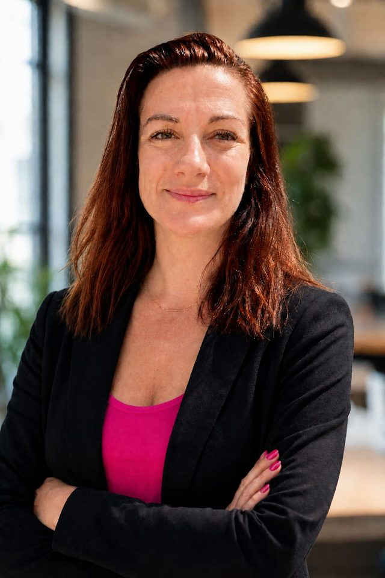
Senior Product Manager à l'intersection du produit, de la tech et des opérations. Depuis une dizaine d'années, je transforme des besoins métiers complexes en produits SaaS et plateformes digitales, de la vision et de la roadmap jusqu'au delivery, à l'adoption et à la mesure d'impact. Je travaille au plus près des équipes Engineering, Data, Business et des utilisateurs pour arbitrer les priorités et construire des solutions utiles, capables de passer à l'échelle et performantes.
Écouter le terrain, construire les bons outils
- Pilotage de l'évolution fonctionnelle de Hiretrack NX sur le périmètre EMEA
- Recueil des besoins terrain et traduction en améliorations de workflows
- Gestion des budgets d'investissement, analyses P&L et définition de standards opérationnels
- Accompagnement des utilisateurs et amélioration continue des processus
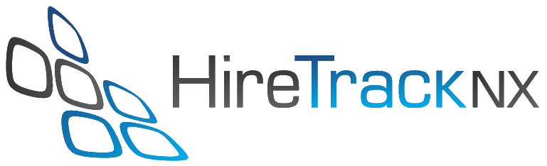
Produit piloté · Hiretrack NX EMEAHiretrack NX, de bout en bout
Évolution fonctionnelle d'une plateforme couvrant l'ensemble du cycle opérationnel, du premier devis à la dernière facture : gestion du matériel, sous-traitance, bons de commande et facturation. L'objectif était de remplacer les échanges dispersés par un workflow métier commun.
Migrer un système entier, sans casser l'opérationnel
- Pilotage du déploiement France et Monaco dans le cadre de la migration EMEA de Hiretrack NX vers Easyjob
- Préparation et contrôle des données, adaptation des workflows, traduction et recette fonctionnelle
- Formation et accompagnement des équipes pour sécuriser l'adoption sans perturber les opérations
- Gestion d'un budget CapEx annuel d'environ 250 000 $ et coordination du déploiement sur 12 sites en Île-de-France
Migration système EMEA
Migration système, reprise des données, adaptation des workflows, recette et formation des utilisateurs. Une transformation menée au plus près du terrain pour préserver la continuité des opérations.


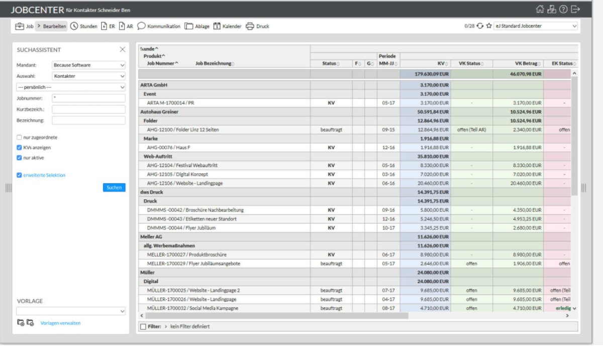
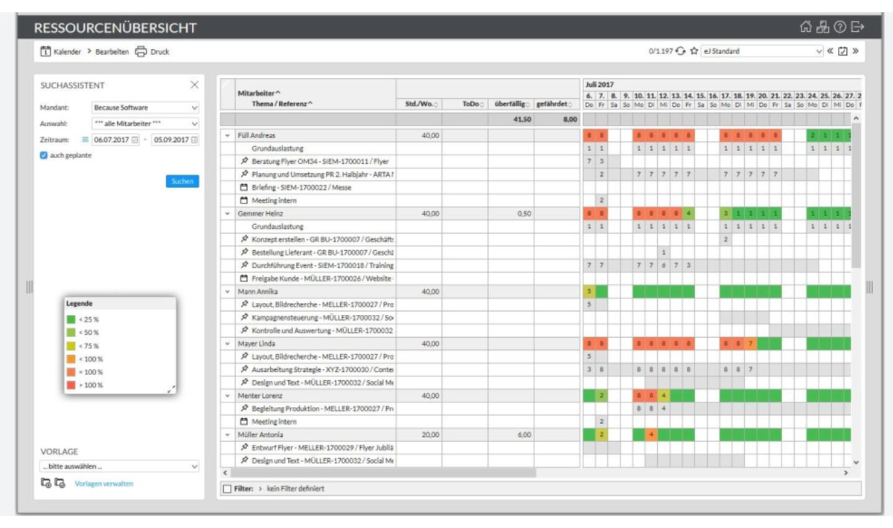
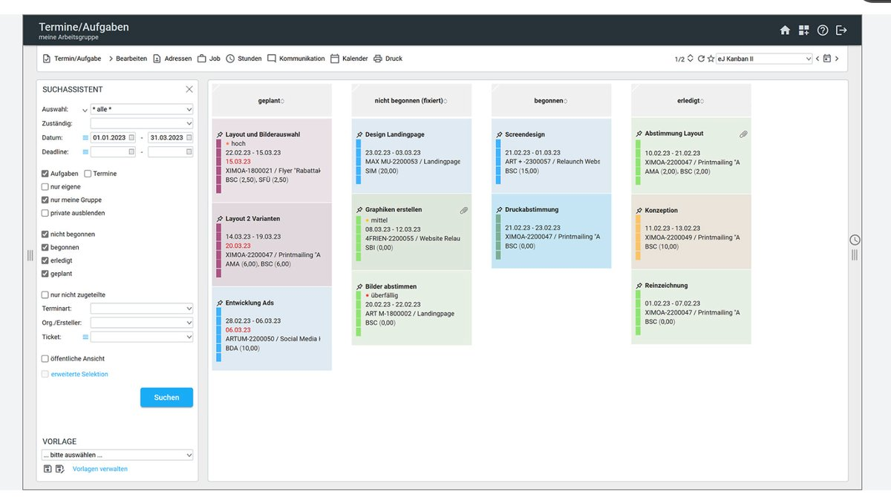
Une plateforme taillée pour l'hypercroissance
- Pilotage de la roadmap et des priorités d'une plateforme CRM web et mobile utilisée sur cinq marchés
- Recueil des besoins utilisateurs, optimisation des parcours et coordination des évolutions avec les équipes Product et Engineering
- Pilotage des tests, du suivi des anomalies, des releases et de l'adoption
- Accompagnement de la croissance de l'équipe française, passée de 7 à 70 collaborateurs en six mois
 Produit piloté · 1CRM · Web + mobile · B2B2C
Produit piloté · 1CRM · Web + mobile · B2B2C
Du recrutement à la dernière fiche de paie
Candidature, onboarding, staffing, booking, notes de frais, fiches de paie, signature des contrats et accès client aux profils. Une plateforme conçue avec les équipes RH, juridiques, paie, opérations et produit.
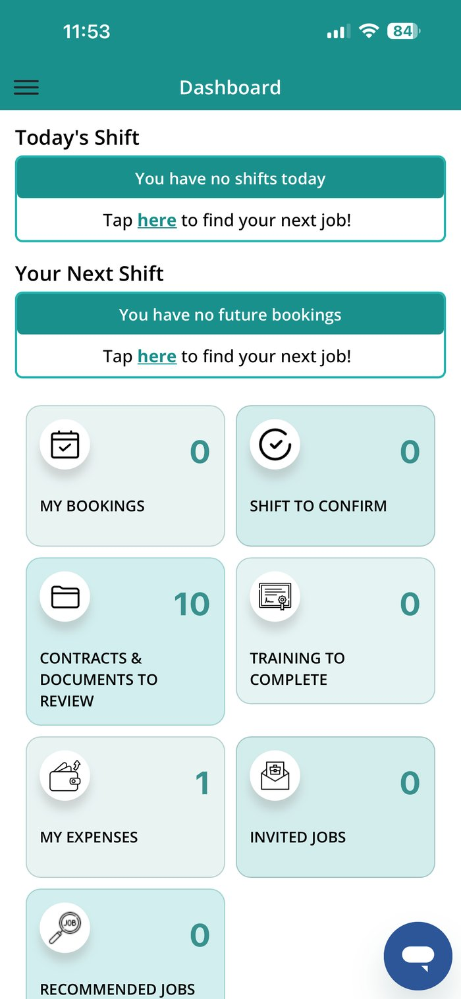
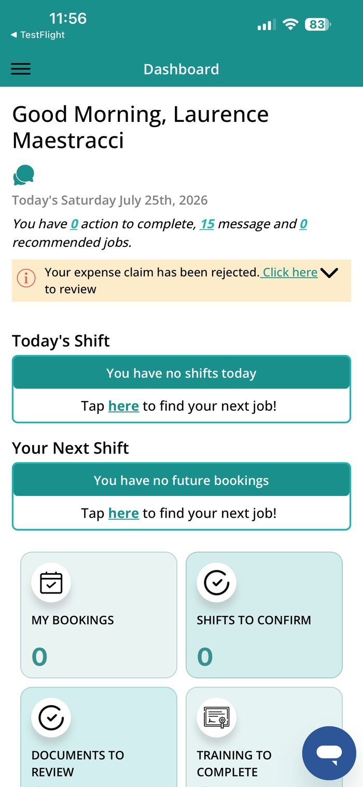
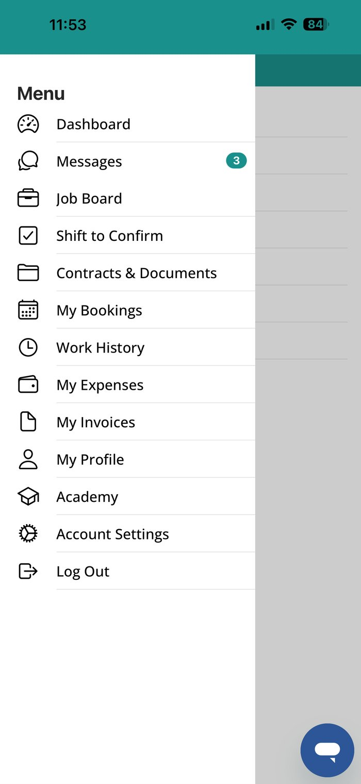


150+ KPIs, un cycle de delivery complet
- Pilotage de la roadmap et des priorités d'une plateforme SaaS B2B de reporting opérant sur cinq marchés
- Traduction des besoins clients et business en évolutions fonctionnelles et arbitrage des priorités
- Coordination transverse des équipes Product, Reporting, Sales et opérations sur l'ensemble du cycle de delivery
- Pilotage du cadrage, des tests, des releases, de l'onboarding et de l'adoption post-lancement
- Encadrement d'une Project Coordinator et structuration du suivi des livraisons
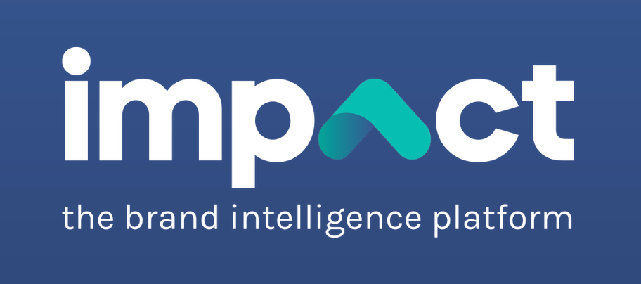
Produit piloté · Impact · SaaS B2BMesure de performance en temps réel
Une plateforme de reporting et d'insights proposant plus de 150 KPIs personnalisables, des briefs clients structurés et des résultats actionnables d'une campagne et d'un marché à l'autre.
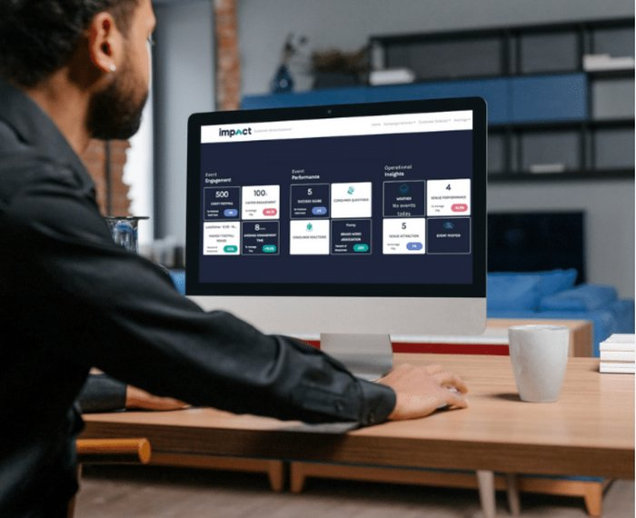
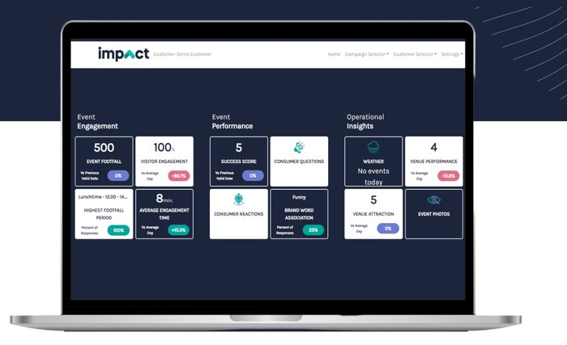
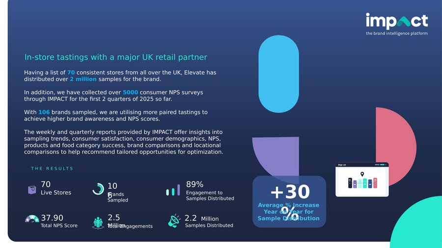
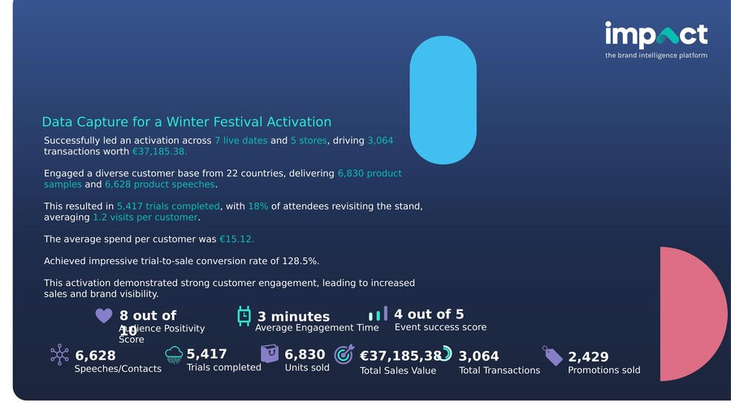
Elevate France a fermé. La suite s'écrit maintenant.
- Disponible pour construire la prochaine plateforme, structurer le prochain chaos
Quatre plateformes, un même fil rouge
De la structuration des opérations au pilotage de produits SaaS internationaux, j'ai accompagné quatre plateformes à des moments clés de leur évolution : optimisation, migration, passage à l'échelle et développement d'une culture de la performance.
Hiretrack NX
Hiretrack NX centralisait l'ensemble du cycle opérationnel, du premier devis à la dernière facture : planning, matériel, sous-traitance, achats, staffing, facturation et rentabilité. À partir des besoins des équipes terrain, j'ai piloté son évolution fonctionnelle sur le périmètre EMEA, structuré les workflows et les standards associés, puis accompagné les utilisateurs dans leur adoption. L'objectif : remplacer des pratiques dispersées par un outil et des processus communs, plus fiables et plus fluides.
Easyjob
Dans le cadre de la migration EMEA de Hiretrack NX vers Easyjob, j'ai piloté le déploiement pour la France et Monaco : reprise et fiabilisation des données, adaptation des workflows, traduction, recette fonctionnelle et formation des équipes. La transformation concernait douze sites en Île-de-France et devait préserver la continuité d'opérations quotidiennes particulièrement exigeantes. Au-delà du changement d'outil, l'enjeu était de faire évoluer les pratiques et de sécuriser l'adoption du nouveau système.
1CRM
1CRM réunissait dans une même plateforme les parcours des équipes terrain, des opérations et des clients : candidature, onboarding, publication des missions, booking, check-in, notes de frais, paie, facturation et reporting. J'ai piloté sa roadmap et ses priorités sur cinq marchés, en transformant les besoins utilisateurs, opérationnels et réglementaires en évolutions produit. J'ai également coordonné les tests, les releases et l'adoption afin que la plateforme puisse accompagner la croissance rapide de l'organisation française, passée de 7 à 70 collaborateurs en six mois.
Impact
Impact permettait aux clients de suivre et comparer la performance de leurs campagnes grâce à un catalogue de plus de 150 KPIs personnalisables. J'ai piloté la roadmap et les priorités de la plateforme sur cinq marchés, traduit les besoins clients et business en évolutions fonctionnelles et coordonné le delivery avec les équipes Product, Reporting, Sales et Operations. Mon périmètre couvrait le cadrage, les tests, les releases, l'onboarding et l'adoption post-lancement, avec l'encadrement d'une Project Coordinator.